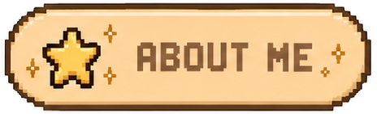

Hi, I’m Lari ♡
software engineer · cat person · internet archivist in spirit · São Paulo
I’m a software engineer who likes making things on the web, but Slavikova is intentionally the opposite of a polished product. It is a place where I can be messy, decorative, specific and human.
I love old internet aesthetics, pixel graphics, fashion, music, games, tiny independent websites and anything that makes the web feel handcrafted again.
I live in São Paulo and share my life with a lot of cats, so naturally they have their own page here too.
I grew up during the era when personal profiles had custom backgrounds, music players, glitter graphics, blinkies, guestbooks and layouts that were unmistakably made by one specific person.
For years the web became cleaner, faster and more standardized, but it also started feeling flatter. Neocities made me want to build something personal again.
Slavikova is my attempt to keep that feeling alive without pretending it is actually 2006. It is old-web nostalgia made with modern HTML, CSS and a little JavaScript.